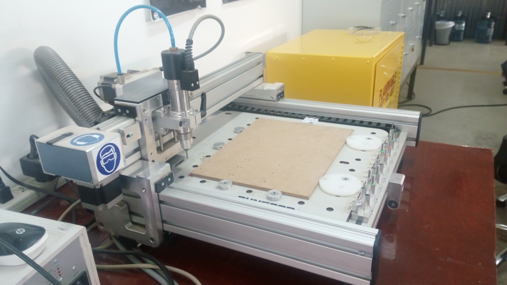
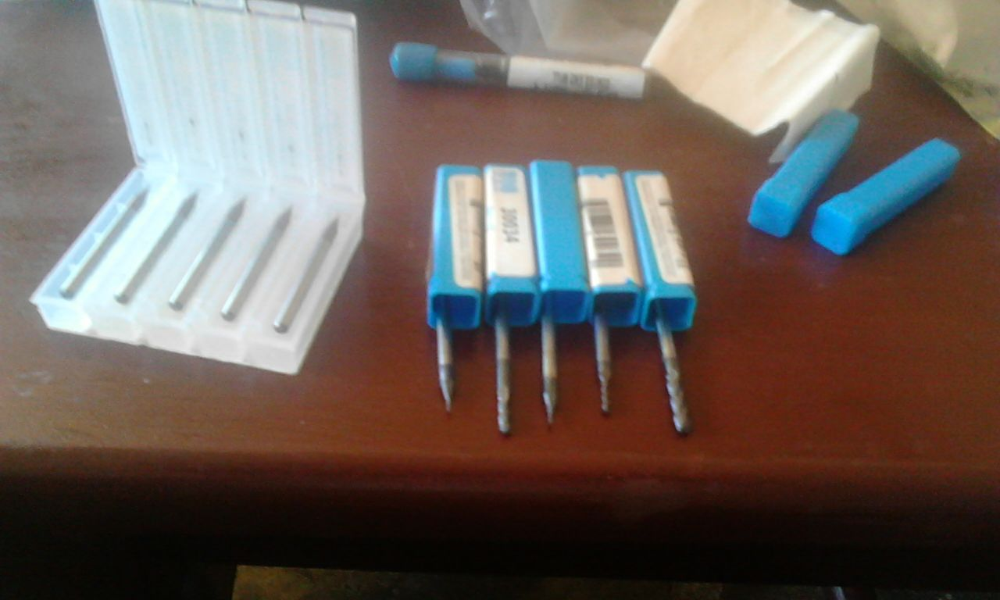

This is the most fun Week for me .Its where I begin to design and make Electronics components.The week aims to form a basis for my future weeks on Electronics Design,Inputs,Outputs,Communications and also my Final project. During this week I will be Producing the Fab Isp using various methords of Electronics Production The key methord I will use now and in the future is Milling although other metheord of Electronics Production will be explained /illustrated.
FabIsp is a programmer that is used in FabLabs to Programme /load software into AVR microcontrollers.The FabIsp I will be making is based off Niels Design and modified by other previous Students
Eagle is an Electronic Design software that is widely used in Fablabs and for hobby Electronics and beginners,In future lessons or weeks I will be showing a detailed tutorial on how to use Eagle to Design Electronic PCBs . But for this week I will only be using it to open the design Files and produce the milling data used by the CNC machine to mill and drill the Fab ISP
In this week ,I aim to Mill the Fab Isp and prohgramme It using the latest orr available firmaware so we can use It to programme our foture Boards we will be making and using


Soldering requires use of a sharp tip soldering gun set at the correct temperature .I also find using Solder paste and Flux very useful in soldering of Surface Mount Componets.
3D After Succesfull Soldering all the componets You need to test the continuity of all the
After Succesully Milling Yor FabIsp You will need to Solder the Componets and test all electrical connections are Okay Testing the connections ensures one does not blow up his board componets due to wrong electrical faults.
You Can download the Design Files Here
<a href="#"> <button type="button" class="btn btn-primary btn-lg">Download the file</button> </a>Result: